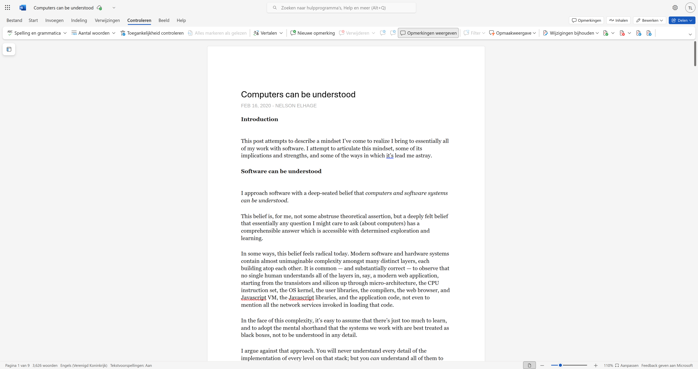
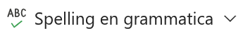
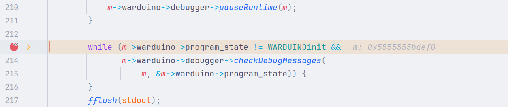
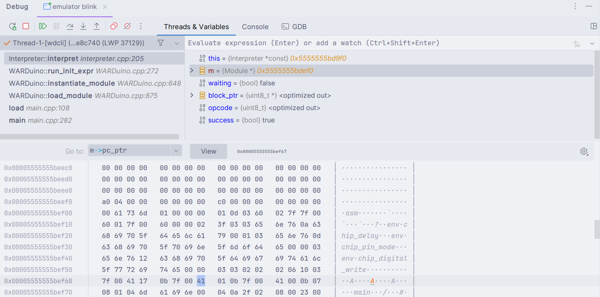
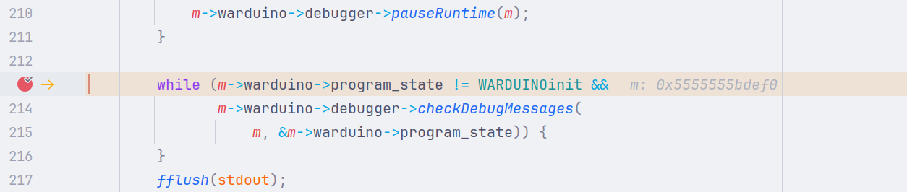
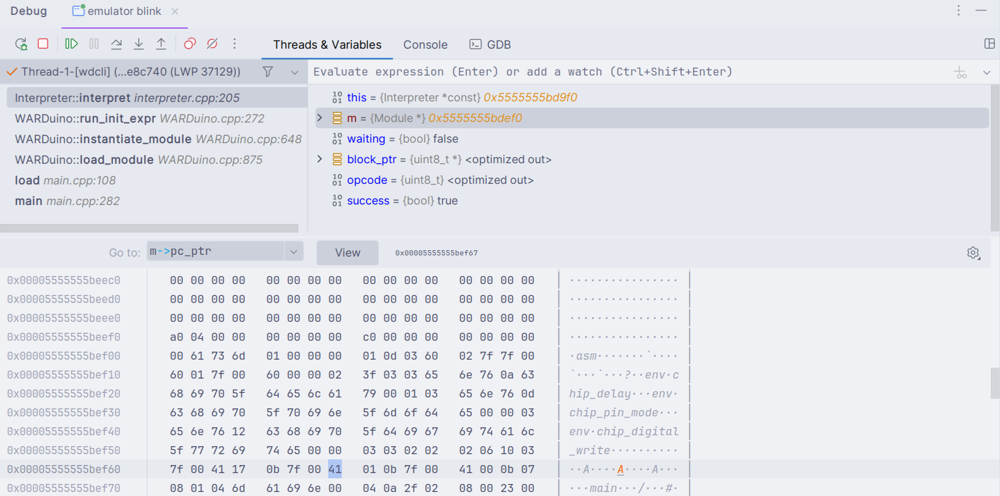

Foundations for Constrained Debugging Techniques
Finding software faults in constrained environments with sound out-of-place and multiverse debugging techniques
de‧bug‧ging
/ˌdiːˈbʌɡɪŋ/ verb
pro‧gram‧ming lan‧guages
/ˈprəʊ.ɡræm.ɪŋ ˈlæŋ.ɡwɪdʒ/ noun


 


